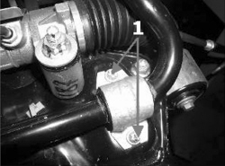
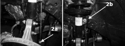

4410CA CHECKS ON STABILIZER BAR
- Path
- Test > 44 SUSPENSION AND WHEELS > 4410 FRONT SUSPENSION > 4410C ANTI-ROLL BAR AND ANCHORAGE STRUTS > 4410CA CHECKS ON STABILIZER BAR
- Kind
- test / check procedure
- Applies to
- all engines; all production periods
- Interactive page
- https://sloeber94.github.io/elrnDB-fCrm/en/#/194002285
Applies to: all engines; all production periods
Position the vehicle on a two column lift.
Raise the vehicle and check that the anti-roll bar is correctly positioned (transversely) in relation to the centre line.
Check that the paint is not worn at the contact points between the bar and the track control arms.
Using a torque wrench calibrated to the recommended value, check that the fastenings for the bar on the fram (1) are tightened to the torque given below.
Type of fastening | Component | Torque (daNm) | |
|---|---|---|---|
1 | Bolt M8 | Crossmember | 2,0 |

Applies to: all engines; all production periods
Using a torque wrench calibrated to the recommended value, check that the nuts fixing the connecting rod to the bar (2a) and to the shock absorber (2b) are tightened to the torque given below.
Type of fastening | Component | Torque (daNm) | |
|---|---|---|---|
2a | Nut M12X1.5 | Anti-roll bar | 6,5 |
2b | Nut M12X1.5 | Shock absorber | 6,5 |
